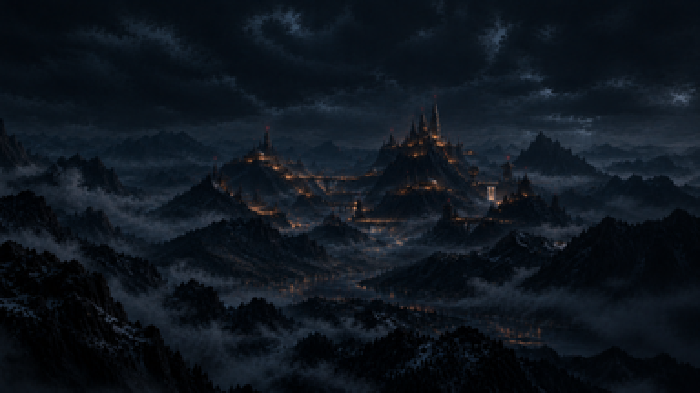

Fase 1 · a pintura nova
20/10/2026 · ← o cenário hoje · A sua "Cidadela Gótica entre Montanhas Nebulosas" (1768×890), reduzida INTEIRA para a altura da tela, como os fundos da F2, F3 e F4. Sem tratamento, sem camadas, sem nada por cima: só a pintura, no pixel do jogo, ampliada 4× para ver.
No tamanho do jogo


O que eu vejo
- Aguenta a redução. As luzes da colônia continuam pontos âmbar de 1 px, e os faróis vermelhos nas pontas das torres continuam visíveis.
- Profundidade e grandeza: os planos de montanha separados por faixas de névoa, a colônia pequena e distante.
- Céu escuro e livre para a invasão: naves descendo, fumaça, os disparos da defesa.